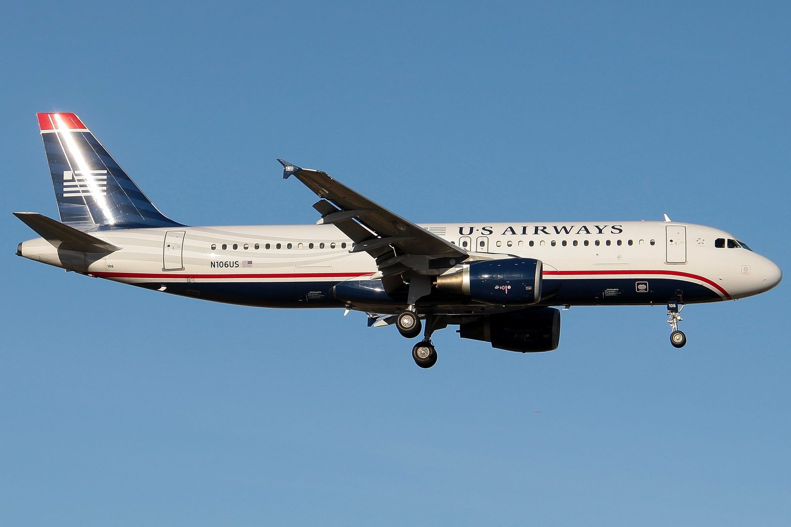
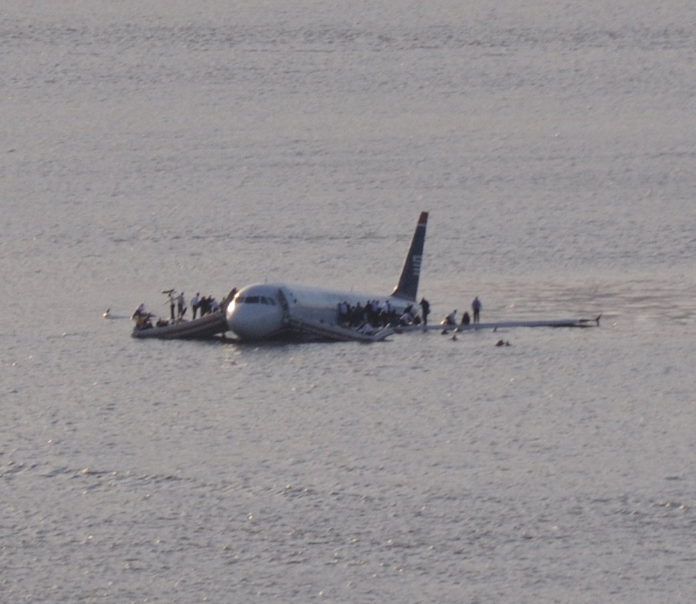
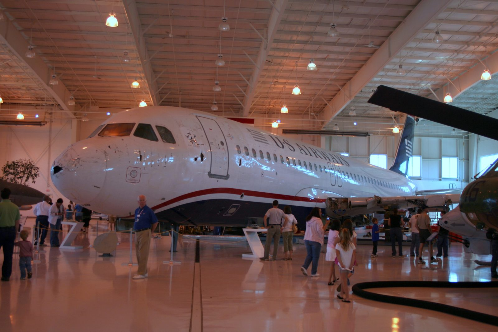

Ninety seconds after lifting off from LaGuardia on an ordinary Thursday afternoon, an Airbus A320 flew into a flock of Canada geese and both engines stopped producing thrust at once, at 2,818 feet, over the most densely populated place in America. From that moment the crew had 208 seconds. Every one of the 155 people aboard walked away. This is the case file every other one in this archive is measured against — and the only one where the ending is good.
All times are Eastern Standard Time. This flight is short enough that the whole case file fits inside six minutes of it.

US Airways 1549 was the mid-afternoon LaGuardia to Charlotte run, a workhorse sector flown several times a day. On board were 150 passengers and five crew: 155 people, heading home or heading out on a cold Thursday in January.
In the left seat was Captain Chesley “Sully” Sullenberger, 57, with 19,663 flying hours behind him — Air Force fighter pilot, airline captain since 1980, and, unusually, a man who had spent years studying accident investigation and crew resource management as a side interest. In the right seat, First Officer Jeffrey Skiles, 49, with 15,643 hours of his own but only 37 of them on the A320. This was his first trip as pilot flying on the type since finishing his conversion training.
In the cabin were flight attendants Sheila Dail, Donna Dent and Doreen Welsh, who between them had roughly a century of experience.
The aircraft was N106US, an Airbus A320-214 built in Toulouse in 1999, powered by two CFM56-5B turbofans. It rolled on LaGuardia's Runway 4 and lifted off into clear, freezing air. The temperature on the ground was 19°F. The Hudson, had anyone been thinking about the Hudson, was 41°F.
At 15:27:11, about ninety seconds after takeoff and 4.5 miles north-northwest of the airport, Flight 1549 flew into a flock of Canada geese at 2,818 feet.
A Canada goose weighs somewhere between eight and twelve pounds. A CFM56 is certified to survive ingesting birds, but the certification standard of the day was built around smaller ones, and around the assumption that you would not put several of them into both engines at the same instant.
That is what happened. Both engines ingested birds simultaneously. Both suffered an almost total loss of thrust. Neither flamed out completely — the fan blades kept turning, the instruments kept showing something — but there was no longer enough power on either side to keep the aircraft flying.
Passengers described a sound like thumping, then a smell of burning bird, then silence where the engine noise had been. In the cockpit the aircraft simply stopped accelerating and started falling.
The ingestion of large birds into each engine, which resulted in an almost total loss of thrust in both engines.
— National Transportation Safety Board, Probable Cause, NTSB/AAR-10/03From the bird strike to the moment the aircraft touched the water, three minutes and twenty-eight seconds elapsed. Everything below happened inside that window.
It is worth sitting with that number before going any further. Two hundred and eight seconds is less time than it takes most people to read this section. Inside it, two pilots had to recognise what had happened, take manual control of an aeroplane that had just become a glider, start the engine restart procedure, evaluate every runway within reach, reject them, choose an alternative that no airline crew had ever successfully used with an aircraft this size, brief the cabin, and fly a powerless jet down onto it.
Sullenberger's first act was to take control from Skiles — three words, “my aircraft” — and turn on the auxiliary power unit. That APU decision gets less attention than it deserves: it kept the aircraft's electrical systems and flight control computers in their normal mode all the way down, which is a large part of why the ditching was as controlled as it was. It was not on the checklist at that point. He did it from instinct.
Twenty-two seconds after the birds, Sullenberger keyed the radio. The transmission is on the FAA's released transcript, and it contains a detail people often miss.
Mayday mayday mayday. Uh, this is, uh, Cactus fifteen thirty nine, hit birds, we've lost thrust in both engines, we're turning back towards LaGuardia.
— Captain Sullenberger, 15:27:33, per the FAA transcriptHe said “fifteen thirty nine.” The flight was 1549. Under the heaviest cognitive load of his life, ninety seconds into an emergency nobody had trained for, he transposed two digits of his own callsign — and it did not matter in the slightest, because everything else in the transmission was exactly what the controller needed: who, what, and what he intended to do about it.
On the ground at New York TRACON, controller Patrick Harten had a departure that had been airborne for two minutes and was now falling. His reply:
Ok, uh, you need to return to LaGuardia? Turn left heading of, uh, two two zero.
— Patrick Harten, New York TRACON, per the FAA transcriptHarten spent the next three minutes offering Sullenberger runways — LaGuardia 13, LaGuardia 4, then Teterboro 1 — and clearing them for an aircraft that never reached any of them. He later testified that he believed he was listening to 155 people die, and that being told afterwards they had all lived was the strangest moment of his career. The controller's transcript from that afternoon is, in its own quiet way, as remarkable a professional document as the cockpit recording.
Two runways were offered. Sullenberger turned both down and named the river, thirty-five seconds after the mayday call.
We're unable. We may end up in the Hudson.
— Captain Sullenberger to New York TRACON, moments after being offered a return to LaGuardiaThe reasoning he gave afterwards is worth quoting because it explains the whole case: he was not calculating glide ratios. He was making a judgement about what he could be certain of. A turn back to LaGuardia meant flying a powerless airliner over Manhattan and the Bronx toward a runway he might not reach, with no second option if he was wrong. The Hudson was long, flat, empty, and directly ahead. If he was wrong about the river, he would still be in the river.
While Sullenberger flew, Skiles ran the dual-engine failure checklist — a three-page procedure written for a failure at cruise altitude, not at 2,800 feet, and one he had no realistic chance of completing before impact. He worked it anyway, all the way down, trying restart after restart. He got further into it than anyone had a right to expect. Thirty-seven hours on type, and he did not put a foot wrong.
The cabin crew heard “brace for impact” over the PA and began shouting the brace command in unison — a chant passengers later described as the thing that kept the cabin from panicking. Several survivors have said the discipline in the back of that aeroplane was as important to the outcome as anything that happened in the front.
For the last ninety seconds, an Airbus A320 crossed Manhattan at low altitude making almost no noise at all.
People on the ground looked up at something they could not immediately parse: a full-size airliner, low, wings level, engines silent, tracking down the line of the river. Office workers in Midtown watched it pass their windows. Nobody on the ground had any idea what they were looking at until it was on the water.
Inside, the passengers had been given one instruction — brace — and roughly ninety seconds to think about it. Many have described the same detail since: how quiet it was, and how the loudest sound in the cabin was the crew.
Sullenberger's last transmission before touchdown was to tell Harten he could not make Teterboro either. Then he stopped talking on the radio, because the aircraft needed both his hands and all of his attention, and flew it down.
I knew I had to solve this problem. I knew I had to do something I had never done before, had never trained for specifically. I had to land on the Hudson River.
— Captain Chesley Sullenberger, on the decisionAt 15:30:39 the A320 touched the Hudson opposite midtown Manhattan, wings level, nose slightly up, at about 125 knots.
Ditching a jet airliner is a manoeuvre that appears in manuals and essentially never in practice. It requires the wings to be exactly level so that neither engine nacelle nor wingtip digs in and cartwheels the aircraft — the failure mode that killed 125 people off the Comoros in 1996. It requires the lowest survivable speed and a nose-up attitude that puts the tail into the water first.
Sullenberger achieved all of it. The aircraft touched down intact, decelerated in the water rather than breaking up, and came to rest floating. The lower rear fuselage was breached and the aft cabin began flooding immediately, but the airframe stayed in one piece.
Sullenberger then walked the length of the flooding cabin twice, checking every row, before he left the aircraft. He was the last person off.
Nobody called the ferries. The ferries simply came.
The commuter ferries that work the Hudson had a plane in the water in front of them and their masters turned toward it without waiting to be tasked. The first was alongside within about four minutes of touchdown — faster than any emergency service could physically have arrived. NY Waterway crews, the Coast Guard, NYPD and FDNY divers and around 140 New York firefighters all converged on the site.
People were standing on the wings in 41°F water and 19°F air, in business clothes. Hypothermia, not impact, was the thing most likely to kill them, and the margin was measured in minutes. The ferry crews threw lines, hauled people up over the sides, and ran them to the piers.
The last person was out of the water at 15:55 — twenty-five minutes after touchdown. Every one of the 155 people aboard was accounted for. Ninety-five had minor injuries. Five were seriously hurt, among them flight attendant Doreen Welsh, injured in the flooding aft cabin where the fuselage had been breached.

The people who got there first were not an emergency service. They were the Thursday afternoon commuter boats, driven by people who saw an aeroplane in the river and turned toward it.
— Why the survival margin heldDuring the investigation, simulator pilots were asked whether Flight 1549 could have made it back to a runway. Some of them could. This is the part of the story that is most often told wrong, and the true version is better than the myth.
The NTSB ran simulator trials in which pilots, knowing what was coming, turned back the instant the birds hit. Of the runs aimed at LaGuardia, seven of thirteen made the runway. Of the two aimed at Teterboro, one made it. So on paper, a return was survivable roughly half the time — provided the pilot began the turn with no hesitation whatsoever.
That proviso is the entire argument. Real crews do not begin a turn at the instant of a failure; they first have to recognise what has happened and decide what to do. So the Board ran it again with a 35-second delay inserted before the turn, to represent that recognition time. With the delay, the aircraft did not make the runway. The Board's own report states that the immediate turns in the simulations “did not reflect or account for real-world considerations.”
It vindicated them. The Board found the decision to ditch in the Hudson provided the highest probability that the accident would be survivable, and its findings praised the crew's performance. There was no finding of error against Sullenberger or Skiles. The investigation was not a prosecution and did not end as one.
Largely from the 2016 film. Sully compresses the investigation into a dramatic tribunal in which investigators appear determined to destroy a good man, and inflates the simulator results into an unbroken run of successes. It makes a better second act. It is not what happened, and both the NTSB and Sullenberger himself have since pushed back on that portrayal. We have used the report's numbers rather than the film's.
Because the honest lesson is sharper. Nobody had to be a villain for this to be worth knowing: it is simply very easy, with a stopwatch and hindsight and no adrenaline, to prove that a pilot could have done better — and very hard to remember that the pilot did not have the stopwatch, the hindsight, or the second attempt. That is a caution about how we judge people under pressure, and it survives without any conspiracy attached to it.
The NTSB adopted its final report on May 4, 2010 and issued 34 safety recommendations. Most of them are still shaping how you fly.
Recommendations addressed the bird-ingestion standards that engines are certified against, including testing with larger birds, after this accident demonstrated the gap between the certification bird and an eight-pound Canada goose.
The dual-engine failure procedure Skiles was working had been written for a failure at cruise, where there is time. The Board recommended checklists designed for the case Flight 1549 actually had: both engines gone, close to the ground, no time at all.
Water-landing technique and dual-engine-failure-at-low-altitude scenarios moved into recurrent training as things pilots practise, rather than paragraphs they read.
Most passengers on 1549 evacuated without life vests, which in 41°F water was a serious problem. The recommendations addressed vest stowage, accessibility and passenger briefing — the same category of failure that killed people on Ethiopian 961, from the opposite direction.

N106US was lifted from the Hudson, barged out, and eventually bought by the aviation museum in Charlotte — the city Flight 1549 had been trying to reach. It is on permanent display there with its engines, salt-stained and dented, and people who were aboard it come to look at it.
Sullenberger retired from US Airways in 2010 and spent the following years as a safety advocate, testifying repeatedly about staffing, experience and the erosion of airline pilot pay and conditions — on the argument that the outcome on the Hudson was bought by decades of accumulated experience that the industry was busy making harder to accumulate. Skiles also stayed in aviation and became active in the pilots' union. Both men have spent the years since insisting, consistently and slightly impatiently, that this was a crew achievement and a ferry-crew achievement and an air traffic control achievement, and not one man's.
150 passengers · 5 crew
Every one of them went home.
Bird strike to touchdown
Long enough, as it turned out.
Every fact in this case file was cross-referenced against at least two independent sources, anchored by the official government investigation. All links open in a new tab.
The National Transportation Safety Board's complete final report, including the probable cause, the full timeline, the simulator study and all 34 safety recommendations.
The Federal Aviation Administration's released transcript of the radio exchanges between Flight 1549 and New York TRACON. The source for every radio quotation on this page, including the “fifteen thirty nine” callsign slip.
The Board's own announcement of its findings, and its statements about the crew's performance.
One of the recommendation letters issued to the FAA arising from this investigation.
CNN's report from the afternoon itself, including the first accounts from the ferry crews and from people on the shore.
Used for crew flight-hour records, injury breakdown and the aircraft's disposition, each cross-checked against the NTSB report.
What people ask about Flight 1549. Answers here match the case file above and the official record it is built on.
About ninety seconds after takeoff from LaGuardia the Airbus A320 flew into a flock of Canada geese at 2,818 feet. Both engines ingested birds simultaneously and suffered an almost total loss of thrust. With no engine power and too little altitude to reach a runway, Captain Chesley Sullenberger ditched the aircraft in the Hudson River.
Yes. All 155 people aboard survived: 150 passengers and five crew. Ninety-five people sustained minor injuries and five were seriously hurt. The last person was pulled from the water 25 minutes after the aircraft touched down, in water at 41 degrees Fahrenheit.
208 seconds. The bird strike happened at 15:27:11 and the aircraft touched the water at approximately 15:30:39. Inside that window the crew had to diagnose the failure, take manual control, start the engine restart procedure, evaluate and reject two airports, brief the cabin and fly a powerless airliner onto the river.
In NTSB simulator trials where pilots turned back immediately, seven of thirteen runs reached LaGuardia and one of two reached Teterboro. When a 35-second delay was added to represent real-world recognition and decision time, the returns failed. The Board concluded the ditching gave the highest probability of survival, and its findings were favourable to the crew throughout.
The airframe, N106US, was recovered from the Hudson and is on permanent display at the aviation museum in Charlotte, North Carolina, the city the flight had been trying to reach. Captain Sullenberger retired in 2010 and became an aviation safety advocate. First Officer Jeffrey Skiles, who worked the dual-engine failure checklist the entire way down, remained in aviation and became active in the pilots' union.